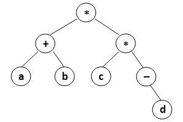

原文连接:https://www.cnblogs.com/whale90830/p/11494161.html
2019 秋季 PAT (Advanced Level) C++题解
考试拿到了满分但受考场状态和知识水平所限可能方法不够简洁，此处保留记录，仍需多加学习。备考总结（笔记目录）在这里
7-1 Forever (20 分)
"Forever number" is a positive integer A with K digits, satisfying the following constrains:
- the sum of all the digits of A is m;
- the sum of all the digits of A+1 is n; and
- the greatest common divisor of m and n is a prime number which is greater than 2.
Now you are supposed to find these forever numbers.
Input Specification
Each input file contains one test case. For each test case, the first line contains a positive integer \(N (≤5)\). Then N lines follow, each gives a pair of \(K (3<K<10)\) and \(m (1<m<90)\), of which the meanings are given in the problem description.
Output Specification
For each pair of K and m, first print in a line Case X, where X is the case index (starts from 1). Then print n and A in the following line. The numbers must be separated by a space. If the solution is not unique, output in the ascending order of n. If still not unique, output in the ascending order of A. If there is no solution, output No Solution.
Sample Input
2
6 45
7 80Sample Output
Case 1
10 189999
10 279999
10 369999
10 459999
10 549999
10 639999
10 729999
10 819999
10 909999
Case 2
No Solution题目思路
- 要找到符合要求的数，给出的条件是 数的位数 K 和 各位的和 m
- 首先要找到满足各位和为 m 的 K 位数，再检查找到的数是否符合要求
- 用 DFS 找满足各位和为 m 的 K 位数
- 参数：这个函数内要填写第几位，要填写什么数字，填好后目前所有位的和
- 由主函数从 1-9 选填第 1 位
- 进入 DFS 递归过程后，每次填好自己这一位，从 0-9 选填下一位
- 递归终止条件：填完 K 位后各位之和刚好等于 m，调用函数检查是否符合要求
- 剪枝
- 一开始只注意到若要填的位数超过所要求的位数，或目前各位之和已经超过要求的 m 应当停止递归，但这样会运行超时
- 注意当前几位确定下来时，有很多后面几位比较小的数已经不可能满足各位之和为 m 的条件了，所以每次检查，若 目前各位 + 剩余每位均填 9 都不能达到 m，此枝应当被剪掉
- 检查找到的数是否符合要求
- 记忆判断素数和最小公约数函数
- 每次取到 A 和 A+1，计算好各位之和并求出 gcd，判断是否为素数且 > 2
- 检查函数返回值为 int，若符合要求返回 A+1 的各位和，若不符合返回 -1 便于调用方进行判断
AC代码
#include<iostream>
#include<vector>
#include<algorithm>
using namespace std;
int k, m;
char s[10];
bool issolved;
struct Data{
int sumN;
string data;
};
vector<Data> result;
bool cmp(Data a, Data b){ return a.sumN != b.sumN ? a.sumN < b.sumN : a.data < b.data; }
bool isPrime(int n){
if (n <= 1) return false;
for (int i = 2; i * i <= n; i++)
if (n % i == 0) return false;
return true;
}
int gcd(int a, int b){ return !b ? a : gcd(b,a%b); }
int checkF(){
int A = stoi(s), B = A+1, sumA = 0, sumB = 0;
string Bs = to_string(B);
for (int i = 0; i < k; i++) sumA += s[i]-'0';
for (int i = 0; i < k; i++) sumB += Bs[i]-'0';
int d = gcd(sumA,sumB);
if (d > 2 && isPrime(d)) return sumB;
else return -1;
}
void DFS(int index, int digit, int sumD){
if (index > k - 1 || sumD > m) return;
if (sumD + 9 * (k - index - 1) < m) return;
s[index] = digit + '0';
if (sumD == m && index == k - 1){
if (checkF() >= 0){
issolved = true;
string data = s;
result.push_back({checkF(),data});
}
return;
}
for (int i = 0; i < 10; i++) DFS(index+1, i, sumD+i);
}
int main()
{
int n;
scanf("%d", &n);
for (int i = 1; i < n + 1; i++){
scanf("%d%d", &k, &m);
printf("Case %d\n", i);
issolved = false;
result.clear();
for (int j = 1; j < 10; j++) DFS(0,j,j);
if (issolved){
sort(result.begin(), result.end(), cmp);
for (int j = 0; j < result.size(); j++)
cout << result[j].sumN << " " << result[j].data << endl;
}
else printf("No Solution\n");
}
return 0;
}7-2 Merging Linked Lists (25 分)
Given two singly linked lists \(L_1 = a_1 \to a_2 \to ... \to a_{n-1} \to a_n\) and \(L_2 = b_1 \to b_2 \to ... \to b_{m-1} \to b_m\). If \(n≥2m\), you are supposed to reverse and merge the shorter one into the longer one to obtain a list like \(a_1 \to a_2 \to b_m \to a_3 \to a_4 \to b_{m-1} ...\) For example, given one list being 6→7 and the other one 1→2→3→4→5, you must output 1→2→7→3→4→6→5.
Input Specification
Each input file contains one test case. For each case, the first line contains the two addresses of the first nodes of \(L_1\) and \(L_2\) , plus a positive \(N (\le 10^5)\) which is the total number of nodes given. The address of a node is a 5-digit nonnegative integer, and NULL is represented by -1.
Then N lines follow, each describes a node in the format:
Address Data Nextwhere Address is the position of the node, Data is a positive integer no more than \(10^5\), and Next is the position of the next node. It is guaranteed that no list is empty, and the longer list is at least twice as long as the shorter one.
Output Specification
For each case, output in order the resulting linked list. Each node occupies a line, and is printed in the same format as in the input.
Sample Input
00100 01000 7
02233 2 34891
00100 6 00001
34891 3 10086
01000 1 02233
00033 5 -1
10086 4 00033
00001 7 -1Sample Output
01000 1 02233
02233 2 00001
00001 7 34891
34891 3 10086
10086 4 00100
00100 6 00033
00033 5 -1题目思路
- 静态链表题
- 接收输入链表后，分别遍历两条链，将结点按链表中的顺序存储在容器中
- 按压入两个长链表的结点就压入一个短链表的结点的顺序将结点压入 result 容器
- 按要求输出 result 容器中的结点
- 注意：读题时想当然的以为要将短链表的结点均匀的并入长链表，其实就是题目里的两长一短即可Orz
AC代码
#include<iostream>
#include<vector>
using namespace std;
struct Node{
int address, data, next;
} node[100001];
int main()
{
int head1, head2, n, address, data, next;
scanf("%d%d%d", &head1, &head2, &n);
for (int i = 0; i < n; i++){
scanf("%d%d%d", &address, &data, &next);
node[address] = {address, data, next};
}
vector<Node> list1, list2, result;
for (int p = head1; p != -1; p = node[p].next)
list1.push_back(node[p]);
for (int p = head2; p != -1; p = node[p].next)
list2.push_back(node[p]);
if (list1.size() > list2.size()){
int j = list2.size() - 1;
for (int i = 0; i < list1.size(); i = i + 2){
result.push_back(list1[i]);
if (i + 1 < list1.size()) result.push_back(list1[i+1]);
if (j >= 0) result.push_back(list2[j--]);
}
}
else{
int j = list1.size() - 1;
for (int i = 0; i < list2.size(); i = i + 2){
result.push_back(list2[i]);
if (i + 1 < list2.size()) result.push_back(list2[i+1]);
if (j >= 0) result.push_back(list1[j--]);
}
}
for (int i = 0; i + 1 < result.size(); i++)
printf("%05d %d %05d\n", result[i].address, result[i].data, result[i+1].address);
printf("%05d %d -1\n", result[result.size()-1].address, result[result.size()-1].data);
return 0;
}7-3 Postfix Expression (25 分)
Given a syntax tree (binary), you are supposed to output the corresponding postfix expression, with parentheses reflecting the precedences of the operators.
Input Specification
Each input file contains one test case. For each case, the first line gives a positive integer \(N (≤ 20)\) which is the total number of nodes in the syntax tree. Then N lines follow, each gives the information of a node (the i-th line corresponds to the i-th node) in the format:
data left_child right_childwhere data is a string of no more than 10 characters, left_child and right_child are the indices of this node's left and right children, respectively. The nodes are indexed from 1 to N. The NULL link is represented by −1. The figures 1 and 2 correspond to the samples 1 and 2, respectively.


Output Specification
For each case, print in a line the postfix expression, with parentheses reflecting the precedences of the operators.There must be no space between any symbols.
Sample Input 1
8
* 8 7
a -1 -1
* 4 1
+ 2 5
b -1 -1
d -1 -1
- -1 6
c -1 -1Sample Output 1
(((a)(b)+)((c)(-(d))*)*)Sample Input 2
8
2.35 -1 -1
* 6 1
- -1 4
% 7 8
+ 2 3
a -1 -1
str -1 -1
871 -1 -1Sample Output 2
(((a)(2.35)*)(-((str)(871)%))+)题目思路
- 题库 1130 Infix Expression (25 分)
- 输入每个结点的左右孩子来建树，用 bool 数组记录结点是否在其他结点的孩子结点中出现过，都没有出现过的即为根结点
- 在后序遍历基础上要添加括号来表示优先级
- 一般是每进入一个子树，就用括号将这个子树括起来，然后递归进入左子树和右子树，递归返回后输出根节点内容
- 注意：表达式中会出现 正负号，此时不能在子结点返回后才输出正负号——特判：当结点左子树为空而右子树不为空时，先输出根节点内容，再进入右子树
AC代码
#include<iostream>
using namespace std;
struct Node{
string data;
int lchild, rchild;
} node[21];
bool occured[21] = {false};
void postorder(int root){
cout << "(";
if (node[root].lchild == -1 && node[root].rchild != -1){
cout << node[root].data;
postorder(node[root].rchild);
cout << ")";
}
else{
if (node[root].lchild != -1) postorder(node[root].lchild);
if (node[root].rchild != -1) postorder(node[root].rchild);
cout << node[root].data << ")";
}
}
int main()
{
int n, root;
string data;
scanf("%d", &n);
for (int i = 1; i < n + 1; i++){
cin >> node[i].data >> node[i].lchild >> node[i].rchild;
if (node[i].lchild != -1) occured[node[i].lchild] = true;
if (node[i].rchild != -1) occured[node[i].rchild] = true;
}
for (root = 1; root < n + 1 && occured[root]; root++);
postorder(root);
return 0;
}7-4 Dijkstra Sequence (30 分)
Dijkstra's algorithm is one of the very famous greedy algorithms. It is used for solving the single source shortest path problem which gives the shortest paths from one particular source vertex to all the other vertices of the given graph. It was conceived by computer scientist Edsger W. Dijkstra in 1956 and published three years later.
In this algorithm, a set contains vertices included in shortest path tree is maintained. During each step, we find one vertex which is not yet included and has a minimum distance from the source, and collect it into the set. Hence step by step an ordered sequence of vertices, let's call it Dijkstra sequence, is generated by Dijkstra's algorithm.
On the other hand, for a given graph, there could be more than one Dijkstra sequence. For example, both { 5, 1, 3, 4, 2 } and { 5, 3, 1, 2, 4 } are Dijkstra sequences for the graph, where 5 is the source. Your job is to check whether a given sequence is Dijkstra sequence or not.
Input Specification
Each input file contains one test case. For each case, the first line contains two positive integers \(N_v(\le 10^3)\) and \(N_e(\le 10^5)\), which are the total numbers of vertices and edges, respectively. Hence the vertices are numbered from 1 to \(N_v\)
Then \(N_e\) lines follow, each describes an edge by giving the indices of the vertices at the two ends, followed by a positive integer weight (≤100) of the edge. It is guaranteed that the given graph is connected.
Finally the number of queries, K, is given as a positive integer no larger than 100, followed by K lines of sequences, each contains a permutationof the \(N_v\) vertices. It is assumed that the first vertex is the source for each sequence.
All the inputs in a line are separated by a space.
Output Specification
For each of the K sequences, print in a line Yes if it is a Dijkstra sequence, or No if not.
Sample Input
5 7
1 2 2
1 5 1
2 3 1
2 4 1
2 5 2
3 5 1
3 4 1
4
5 1 3 4 2
5 3 1 2 4
2 3 4 5 1
3 2 1 5 4Sample Output
Yes
Yes
Yes
No题目思路
- 注意审题 Orz：检查序列是否为 Dijkstra 过程中 每次找到 距离原点最近 用于更新相邻点 的 中介点 的 序列
- Dijkstra 每次找目前距原点最近的点，若有几个距离相同的会取其中一个，但其实先检查另外几个点也可
- 整体模板还是用 Dijkstra，每次循环检查 query 的一位
- 查 当前距离原点最近 的 未访问点 与原点的距离
- 看 与当前位的 query 中的点 到原点的距离是否符合
- 若符合，则以 query 当前点为中介 更新邻接点距原点的距离
- 若不符合，说明此时不应当以 query 当前点为中介继续 Dijkstra，即此 query 非所要求的 Dijkstra sequence，返回 false
AC代码
#include<iostream>
using namespace std;
const int INF = 0x3fffffff;
int n, G[1001][1001], d[1001], query[1001];
bool Dijkstra(int root){
fill(d, d+1001, INF);
bool vis[1001] = {false};
d[root] = 0;
for (int i = 0; i < n; i++){
int u, min = INF;
for (int j = 1; j < n + 1; j++)
if (d[j] < min && !vis[j])
min = d[j];
if (d[query[i]] == min) u = query[i];
else return false;
vis[u] = true;
for (int j = 1; j < n + 1; j++)
if (G[u][j] && !vis[j] && d[j] > d[u] + G[u][j])
d[j] = d[u] + G[u][j];
}
return true;
}
int main()
{
int m, u, v, distance, k;
scanf("%d%d", &n, &m);
for (int i = 0; i < m; i++){
scanf("%d%d%d", &u, &v, &distance);
G[u][v] = G[v][u] = distance;
}
scanf("%d",&k);
for (int i = 0; i < k; i++){
for (int j = 0; j < n; j++) scanf("%d", &query[j]);
bool isD = Dijkstra(query[0]);
printf("%s\n", isD ? "Yes" : "No");
}
return 0;
}